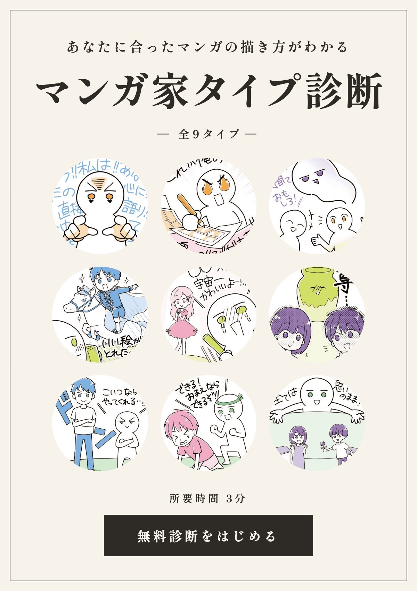

マンガ
ペン入れ
極マッター
MPK Ver 0.9.34
直線・曲線、各5問を繰り返す。
時間内にできるだけ高精度で描き続けよう。
極まる（右利き）
練習する（右利き）
極まる（左利き）
練習する（左利き）
利き手を選んでスタート。左利きはお手本の向きが左右反転します
直線①
×5問
→
直線②
×5問
→
曲線①
×5問
→
曲線②
×5問
↩ 全4種クリアでまた直線①から繰り返す
TIME
30
直線
セット1 — 1問目 / 5問
SCORE
0
セット
1
DEBUG OFF
連打メーター
×0
ペンで線を引いてください
ペン入れ極マッター
🐌
なめくじ級
0
TOTAL SCORE
もう一度
結果画像保存
タイトルへ
DEBUG SHEET

続けて極まる
‹ タイトル
直線①
1問目 / 5問
SCORE
0
練習モード — 同じ線を5本ためし描き・タイマーなし・ベスト1本を採用
光っている線からペン入れ